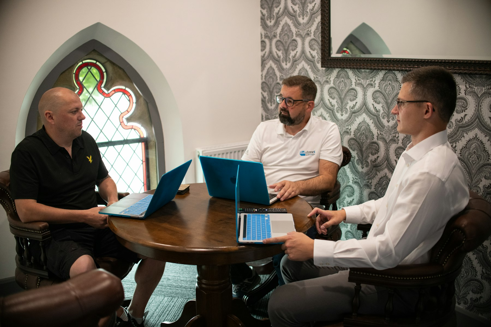

TL;DR
Transform your hobby into income quickly. Identify your niche, research the market, and use platforms like Etsy to reach customers. Expect to invest a little time each week for set-up and maintenance. Start small, expand your offerings, and watch your income grow.
Hobbyists Ready to Monetize Their Skills

If you're passionate about a hobby and want to transform it into a source of income, you're in the right place. Many people worry about the initial costs and skills required to start monetizing their passions.
Often, they struggle with a lack of knowledge on how to target their efforts effectively...
Why Common Advice on Monetizing Fails
Many hobbyists receive generic advice that overlooks essential factors like market trends and unique value propositions. For instance, simply suggesting to 'sell your crafts online' doesn't account for individual niche demands or personal branding...
The Core Workflow to Turn Your Hobby into Income
To monetize your hobby effectively, follow this robust four-step workflow: 1. Identify Your Skills: Reflect on what you enjoy doing and how it can serve others. 2. Conduct Market Research: Look at trending topics and what sells on marketplaces like Etsy or Fiverr.
3...
A Real Example: Knitting to Income
Consider Jane, a passionate knitter who turned her hobby into a successful side business. Initially, she spent just $100 on quality yarn and basic equipment.
By following the four-step workflow: she identified her niche (hand-knitted scarves), conducted market research on pricing, built an audience through Instagram,...
Common Mistakes and Tradeoffs to Avoid
As you embark on this journey, steer clear of common pitfalls like underpricing your services. Many newbies price items too low to attract sales, only to realize they’re undervaluing their time and effort.
Additionally, neglecting promotion can severely limit your reach and potential income...
Next Steps: Expanding Your Income Streams
Once you’ve established your primary income source, consider expanding. Digital products like eBooks or online workshops can tap into ongoing revenue opportunities.
For example, if you enjoy pottery, create and sell beginner classes or guides on running a pottery studio...
FAQ
How much time do I need to invest to start earning from my hobby?
The initial setup can take a few weeks, but spending as little as a couple of hours a week can lead to earnings.
What are the best platforms to sell my hobby-related products?
Etsy, Shopify, and Gumroad are excellent platforms for varied hobbies.
Can I really make a steady income?
Yes, many hobbyists transition to full-time income once they establish a solid audience and product fit.
What if I don’t have a large following?
Start with niche communities relevant to your hobby; even small audiences can drive sales.
Is it necessary to invest in promotional tools?
While not mandatory, a small budget for ads can significantly boost visibility.
This article has been reviewed for practical usefulness and updated when information changes.
Next step
Use the article as a decision point, not just reading material. Your next system matters more than more browsing.
Search more articles
Find related tools, workflows, and guides.
Photo credits
- Photo 1: Bluestonex via Unsplash
- Photo 2: Hoi An and Da Nang Photographer via Unsplash
- Photo 3: Julio Lopez via Unsplash
- Photo 4: Beatriz Cattel via Unsplash
- Photo 5: airfocus via Unsplash